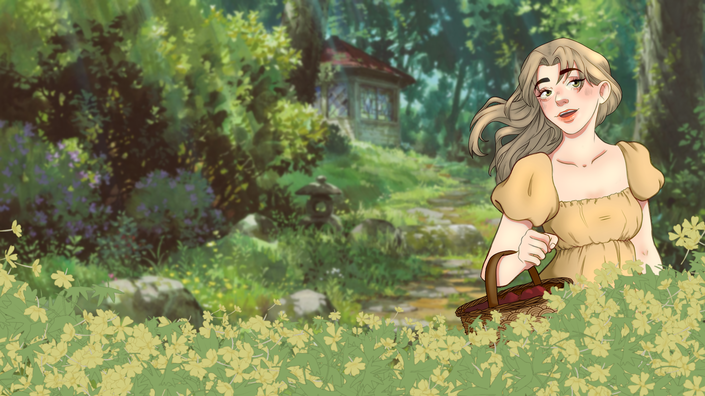

Etiqueta de la primera diapositiva
Algún contenido placeholder representativo para la primera diapositiva.

Etiqueta de la segunda diapositiva
Algún contenido placeholder representativo para la segunda diapositiva.

Etiqueta de la tercera diapositiva
Algún contenido placeholder representativo para la tercera diapositiva.

Etiqueta de la tercera diapositiva
Algún contenido placeholder representativo para la tercera diapositiva.

Etiqueta de la tercera diapositiva
Algún contenido placeholder representativo para la tercera diapositiva.